مجموعة Maffei هي مجموعة مجرات شهيرة قريبة على الرغم من أن معظم المجرات في المجموعة تم اكتشافها فقط في العشرين عامًا الماضية. تقع الكثير من المجرات في هذه المجموعة خلف مستوى مجرتنا مباشرة وتخفيها كل الغازات والغبار والنجوم المتداخلة. يمكن رؤية الجانب الأيسر فقط من هذه المجموعة حول مجرة IC 342 القريبة بسهولة - معظم المجرات حول Maffei I و II لم يتم اكتشافها حتى التسعينيات.
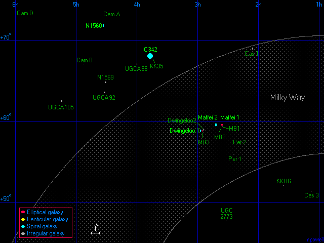
أدناه - ثلاث مجرات محجوبة للغاية. (الأولى إلى اليسار)Maffei I الأقرب و هي مجرة بيضاوية كبيرة. (في الوسط) Maffei II عبارة عن مجرة حلزونية بها شريط بارز في وسطها. (يمين) Dwingeloo 1 و هي عبارة عن مجرة حلزونية ذات قضيب و تقع في الجزء الخلفي من المجموعة لكنها خافتة لدرجة أنها لم تكتشف حتى عام 1994. و يحجب الغبار الموجود في المقدمة في مجرتنا معظم الضوء الأزرق من هذه المجرات ويجعلها تبدو حمراء أكثر مما هي عليه في الواقع.
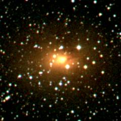 |
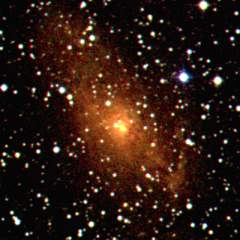 |
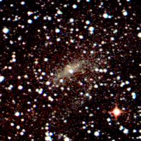 |
| Maffei I | Maffei II | Dwingeloo 1 |
هذه قائمة بالمجرات الرئيسية في مجموعة مافي. الكثير من أقطار هذه المجرات مجرد تقديرات تقريبية لأن معظم هذه المجرات محجوبة للغاية. والمجرات المهيمنة في هذه المجموعة هي IC 342 و Maffei I و Maffei II.
|
اكتشف باولو مافي مجرتَي Maffei في عام 1968. ولاحظ وجود جسم يصدر الأشعة تحت الحمراء في منطقة IC 1895 واقترح أنه قد تكون هناك مجرات محجوبة في هذه المنطقة. تم تصنيف المجرتين سابقًا على أنهما سدم انبعاثية - أدرجهما ستيوارت شاربلس كجسمين هما 191 و 197 في كتالوج مناطق الهيدروجين المؤين H II المنشور في عام 1959.
بين عامي 1971 و 1973 ، أكدت مجموعتان بحثيتان من العلماء ( 1, 2) بقيادة Hyron Spinrad أن Maffei I و II هما مجرتان واقترحوا أن Maffei I قد تكون عضوًا في المجموعة المجرية المحلية. لقد كانوا مخطئين ، لكن ليس من غير المألوف رؤية كتب مرجعية تصف Maffei I على أنها تتبع للمجموعة المجريةالمحلية.
تم الإعلان عن مجرة رئيسية ثالثة بواسطة Kraan-Korteweg و Loan و Burton و Lahav و Ferguson و Henning و Lynden-Bell في عام 1994. تم اكتشاف المجرة باستخدام تلسكوب لاسلكي Dwingeloo 25m في هولندا ولذلك سميت Dwingeloo 1. تم اكتشاف مجرة صغيرة مرافقة - Dwingeloo 2 - بعد ذلك بوقت قصير.
للحصول على مسح ممتاز (نُشر عام 1999) للعديد من المجرات في هذه المجموعة ، انظر: مقالة للباحثين Ronald Buta و Marshall McC منشورة بعنوان The IC 342/Maffei Group Revealed.
تظهر أدناه ثلاث مجرات أخرى في هذه المجموعة.(إلى يسار) NGC 1560 عبارة عن مجرة حلزونية أو غير منتظمة من الحافة. (في المنتصف) NGC 1569 ليست سوى مجرة قزمة ، لكنها على الأرجح أقرب مثال لمجرة النجوم المتفجرة starburst galaxy - و هي مجرة معروفة بسرعة نشأة الكثير من النجوم الجديدة فيها. (إلى اليمين) UGCA 105 هي مجرة قزمة تظهر صورة مبهمة لبنية حلزونية.
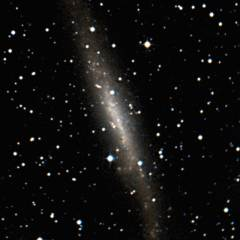 |
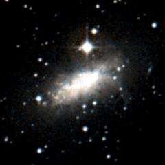 |
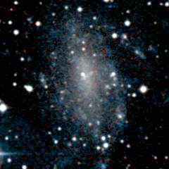 |
| NGC 1560 | NGC 1569 | UGCA 105 |
يوجد أدناه صورة IC 342. ربما تكون هذه أكبر مجرة في مجموعة Maffei. لو لم تكن قريبة جدًا من مستوى مجرة درب التبانة ، لكان من المرجح أن تصبح واحدة من أشهر المجرات في السماء. (ربما ستكون مرئية بالعين المجردة). لم يتم اكتشاف هذه المجرة حتى عام 1890 تقريبًا لأنها محجوبة إلى حد ما بسبب الغبار والنجوم الموجود في مقدمة مجرتنا ، لكنها لا تزال مجرة مذهلة.
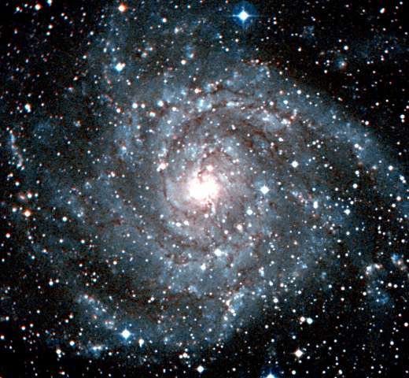
أدناه - ثلاث مجرات غير منتظمة قزمة في مجموعة Maffei. (إلى اليسار) UGC 2773 هي مجرة قزمة مدمجة تقع في الجزء الخلفي من المجموعة. (في الوسط) UGCA 86 و (إلى اليمين) UGCA 92 أكثر قرباً ، وهما مجرتان قزمتان خافتتان غير منتظمتان تقعان على بعد حوالي سبعة ملايين سنة ضوئية منا في مقدمة المجموعة بالقرب من IC 342.
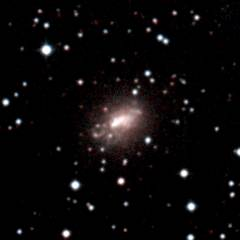 |
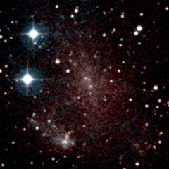 |
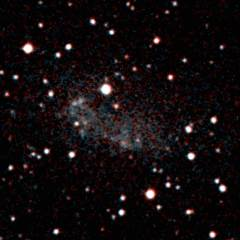 |
| UGC 2773 | UGCA 86 | UGCA 92 |
| خصائص المجموعة المجرية Maffei | |
|---|---|
| الإحداثيات الاستوائية | RA=03h30m Dec=+60° |
| الإحداثيات المجرية | l=140° b=+5° |
| الإحداثيات المجرية الفائقة | L=5° B=-5° |
| المسافة إلى مركز المجموعة المجرية | 10 مليون سنة ضوئية |
| عدد المجرات الكبيرة في المجموعة | 5 |
| الاسم البديل للمجموعة المجرية | IC 342 Group |